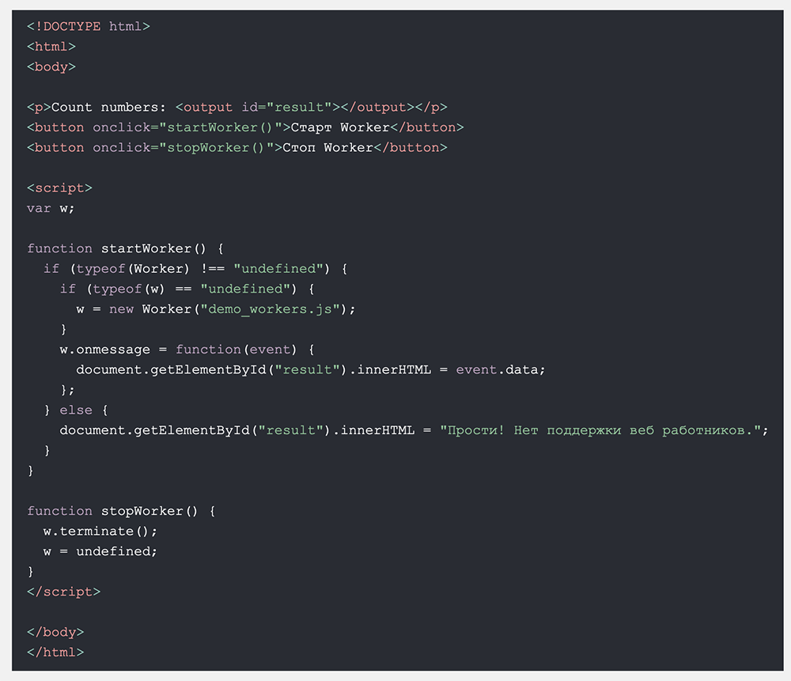

API геолокации HTML используется для определения местоположения пользователя.
Примечание: Геолокация наиболее точна для устройств с GPS, таких как смартфон.
Примечание: Начиная с Chrome 50, API геолокации будет работать только в безопасных контекстах, таких как HTTPS. Если ваш сайт размещен на незащищенном источнике (например, HTTP), запросы на получение местоположения пользователей больше не будут работать.
Использование геолокации HTML
Метод getCurrentPosition() используется для возврата позиции
пользователя.
Приведенный ниже пример возвращает широту и долготу положения пользователя:
Объяснение примера:
Приведенный выше пример - очень простой скрипт геолокации, без обработки ошибок.
Обработка ошибок и отклонений
Второй параметр системы, метод getCurrentPosition() используется для обработки ошибок. Он указывает функцию для запуска, если ей не удается получить местоположение пользователя:
Нажмите кнопку, чтобы получить координаты.
Отображение результата на карте
Чтобы отобразить результат на карте, вам нужен доступ к картографическому
сервису, например Google Maps.
В приведенном ниже примере возвращенные широта и долгота используются для отображения местоположения на карте Google (с использованием статического изображения):
function showPosition(position) {
var latlon = position.coords.latitude + "," +
position.coords.longitude;
var img_url = "https://maps.googleapis.com/maps/api/staticmap?center=
"+latlon+"&zoom=14&size=400x300&sensor=false&key=YOUR_KEY";
document.getElementById("mapholder").innerHTML = "‹!img src='"+img_url+"'›";
}
Информация о местоположении
На этой странице показано, как отобразить положение пользователя на карте.
Геолокация также очень полезна для получения специфической информации о местоположении, например:
Метод getCurrentPosition() - возвращает данные Метод getCurrentPosition() возвращает объект при успешном выполнении. Свойства широта, долгота и точность всегда возвращаются. Остальные свойства возвращаются, если они доступны:
Свойство Возврат
coords.latitude Широта в виде десятичного числа (всегда
возвращается)
coords.longitude Долгота в виде десятичного числа (всегда
возвращается)
coords.accuracy Точность положения (всегда возвращается)
coords.altitude Высота в метрах над средним уровнем моря
(возвращается, если имеется)
coords.altitudeAccuracy Точность определения высоты положения
(возвращается, если имеется)
coords.heading Курс в градусах по часовой стрелке от Севера
(возвращается, если имеется)
coords.speed Скорость в метрах в секунду (возвращается, если
имеется)
timestamp Дата/Время ответа (возвращается, если имеется)
Объект геолокации также имеет другие интересные методы:
watchPosition() - Возвращает текущее положение
пользователя и продолжает возвращать обновленное положение по мере
движения пользователя (например, GPS в автомобиле).clearWatch() - Останавливает работу метод
watchPosition().В приведенном ниже примере показано следующее: метод watchPosition(). Вам нужно точное GPS устройство, чтобы проверить это (например, смартфон):
Нажмите кнопку, чтобы получить координаты.
В HTML любой элемент можно перетащить и удалит
Схватать и сбросить Перетаскивание - очень распространенная функция. Это когда вы "хватаете" объект и перетаскиваете его в другое место.
Перетащите изображение lady_knees в прямоугольник:
Это может показаться сложным, но давайте пройдемся по всем различным частям события перетаскивания.
Сделать элемент перетаскиваемым
Прежде всего: чтобы сделать элемент перетаскиваемым, установите атрибут draggable в true:
img draggable="true"
Что схватывает - ondragstart и setData()
Затем укажите, что должно произойти при перетаскивании элемента.
В приведенном выше примере атрибут ondragstart вызывает функцию
drag(event), которая определяет, какие данные следует перетаскивать.
Метод dataTransfer.setData() задает тип данных и значение перетаскиваемых данных
function drag(ev) {
ev.dataTransfer.setData("text", ev.target.id);
}
В этом случае тип данных является "text" и значение - это идентификатор перетаскиваемого элемента ("drag1").
Куда сбросить - ondragover
Событие ondragover указывает, куда могут быть отброшены перетаскиваемые
данные.
По умолчанию данные/элементы не могут быть удалены в другие элементы.
Чтобы разрешить падение, мы должны предотвратить обработку элемента по
умолчанию.
Это делается путем вызова метода event.preventDefault() для события ondragover:
event.preventDefault()
Сделайте сброс - ondrop
Когда перетаскиваемые данные отбрасываются, происходит событие
отбрасывания.
В приведенном выше примере атрибут ondrop вызывает функцию drop(event):
function drop(ev) {
ev.preventDefault();
var data = ev.dataTransfer.getData("text");
ev.target.appendChild(document.getElementById(data));
}
Объяснение кода:
Перетащите изображение вперед и назад между четырмя элементами div.
HTML Веб хранилище; лучше, чем файлы cookie.
Что такое HTML веб хранилище?
С помощью веб хранилища, веб приложения могут сохранять данные локально в
браузере пользователя.
До появления HTML5 данные приложений должны были храниться в файлах cookie,
включаемых в каждый запрос сервера. Веб хранилище является более
безопасным, и большие объемы данных могут храниться локально, не влияя на
производительность веб сайта.
В отличие от файлов cookie, лимит хранения намного больше (не менее 5
Мб), и информация никогда не передается на сервер.
Веб хранилище предназначено для каждого источника (для каждого домена и протокола). Все страницы из одного источника могут хранить и получать доступ к одним и тем же данным.
HTML веб хранилище предоставляет два объекта для хранения данных клиента:
window.localStorage - хранит данные без срока годности
window.sessionStorage - сохраняет данные за один сеанс (данные теряются
при закрытии вкладки браузера)
Перед использованием веб хранилища проверьте поддержку браузером localStorage и sessionStorage:
if (typeof(Storage) !== "undefined") {
// Код для localStorage/sessionStorage.
} else {
// Прости! Нет поддержки веб хранилища.
}localStorageОбъект localStorage хранит данные без даты истечения срока действия. Данные не будут удалены при закрытии браузера и будут доступны на следующий день, неделю или год.
Объяснение примера:
- Создайте пару имя/значение локального хранилища с помощью
name="lastname" и value="Smith"
- Получить значение "lastname" и вставьте его в элемент с помощью
id="result"
Приведенный выше пример также можно было бы написать так:
// Хранить
localStorage.lastname = "Smith";
// Извлечь
document.getElementById("result").innerHTML = localStorage.lastname;Синтаксис для удаления "lastname" элемент localStorage выглядит следующим образом:
localStorage.removeItem("lastname");
Примечание: Пары имя/значение всегда хранятся в виде строк. Не забудьте
конвертировать их в другой формат, если это необходимо!
В следующем примере подсчитывается количество нажатий кнопки пользователем.
В этом коде строка значения преобразуется в число, чтобы иметь возможность увеличить счетчик:
Нажмите кнопку, чтобы увидеть увеличение счетчика.
Закройте вкладку браузера (или окно) и повторите попытку, счетчик продолжит считать (не сбрасывается).
sessionStorageОбъект sessionStorage объект равен объекту
localStorage, кроме того, что он хранит данные только для
одного сеанса. Данные удаляются, когда пользователь закрывает
определенную вкладку браузера.
В следующем примере подсчитывается количество раз, когда пользователь нажал кнопку в текущем сеансе:
Нажмите кнопку, чтобы увидеть увеличение счетчика.
Закройте вкладку браузера (или окно) и повторите попытку, счетчик продолжит считать (не сбрасывается).
Веб работник - это JavaScript, работающий в фоновом режиме, не влияя на производительность страницы.
Что такое веб работник?
При выполнении сценариев на HTML странице страница перестает отвечать на
запросы до тех пор, пока сценарий не будет завершен.
Веб работник - это JavaScript, который работает в фоновом режиме, независимо от других сценариев, не влияя
на производительность страницы. Вы можете продолжать делать все, что хотите: щелкать, выбирать вещи и т.д., В то время когда веб работник работает в фоновом режиме.
Пример HTML Веб работника
В приведенном ниже примере создается простой веб работник, который считает числа в фоновом режиме:
Счет чисел:
Проверьте поддержку веб работника
Перед созданием веб работника проверьте, поддерживает ли его браузер пользователя:
if (typeof(Worker) !== "undefined") {
// Да! Поддержка веб работников!
// Некоторый код.....
} else {
// Прости! Нет поддержки веб работников.
}Теперь давайте создадим нашего веб работника во внешнем JavaScript.
Здесь мы создаем сценарий, который имеет значение. Скрипт хранится в файле "demo_workers.js":
var i = 0;
function timedCount() {
i = i + 1;
postMessage(i);
setTimeout("timedCount()",500);
}
timedCount();Важной частью приведенного выше кода является метод postMessage() -
который используется для отправки сообщения обратно на HTML страницу.
Примечание: Обычно веб работники используются не для таких простых сценариев, а для более интенсивных задач CPU.
Теперь, когда у нас есть файл worker, нам нужно вызвать его с HTML страницы.
В следующих строках проверяется, существует ли работник, если нет - он создает новый объект worker и запускает код в "demo_workers.js":
if (typeof(w) == "undefined") {
w = new Worker("demo_workers.js");
}Затем мы можем отправлять и получать сообщения от веб работника.
Добавить слушатель событий "onmessage" для веб работника.
w.onmessage = function(event){
document.getElementById("result").innerHTML = event.data;
};Когда веб работник отправляет сообщение, выполняется код в прослушивателе событий. Данные веб работника хранятся в event.data.
При создании объекта worker он будет продолжать прослушивать сообщения
(даже после завершения работы внешнего скрипта) до тех пор, пока не
завершит работу.
Чтобы завершить работу веб работника и освободить ресурсы браузера/компьютера, используйте метод terminate():
w.terminate();
Если вы зададите переменной worker значение undefined, то после ее
завершения вы сможете повторно использовать код:
w = undefined;
Мы уже видели рабочий код в файле .js. Ниже приведен код для HTML страницы:
Поскольку веб работники находятся во внешних файлах, они не имеют доступа к следующим объектам JavaScript:
Server-Sent Events (SSE) Разрешить веб странице получать обновления с сервера.
Событие, отправленное сервером - это когда веб страница автоматически
получает обновления с сервера.
Это было возможно и раньше, но веб страница должна была спросить,
доступны ли какие либо обновления. С событиями, отправленными сервером,
обновления приходят автоматически.
Примеры: обновления Facebook/Twitter, обновления цен на акции, новостные ленты, спортивные результаты и т.д.
Объект EventSource используется для получения уведомлений о событиях, отправленных сервером:
Объяснение примера:
- Создайте новый объект EventSource и укажите URL- дрес страницы, отправляющей
обновления (в файл "demo_sse.php")
- Каждый раз при получении обновления происходит событие onmessage
- Когда происходит событие onmessage, поместите полученные данные в элемент с
помощью id="result"
Проверьте поддержку событий, отправленных сервером
В приведенном выше примере, было несколько дополнительных строк кода для проверки поддержки браузером событий, отправленных сервером:
if(typeof(EventSource) !== "undefined") {
// Да! Поддержка событий, отправляемых сервером!
// Некоторый код.....
} else {
// Прости! Поддержка событий, отправляемых сервером, отсутствует.
}Пример кода на сервере
Для работы приведенного выше примера вам нужен сервер, способный
отправлять обновления данных (например, PHP или ASP).
Синтаксис потока событий на стороне сервера прост. Установите header
"Content-Type" к "text/event-stream". Теперь вы можете начать отправлять
потоки событий.
Код на PHP (demo_sse.php):
‹!?php
header('Content-Type: text/event-stream');
header('Cache-Control: no-cache');
$time = date('r');
echo "data: Серверное время: {$time}\n\n";
flush();
?›Код на ASP (VB) (demo_sse.asp):
<%
Response.ContentType = "text/event-stream"
Response.Expires = -1
Response.Write("data: Серверное время: " & now())
Response.Flush()
%>Объяснение кода:
В приведенных выше примерах мы использовали событие onmessage для получения сообщений. Но доступны и другие события: